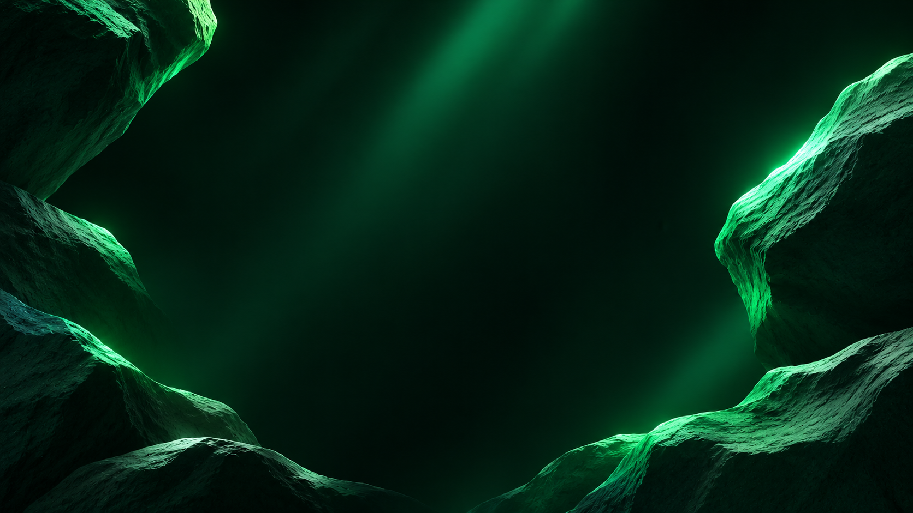
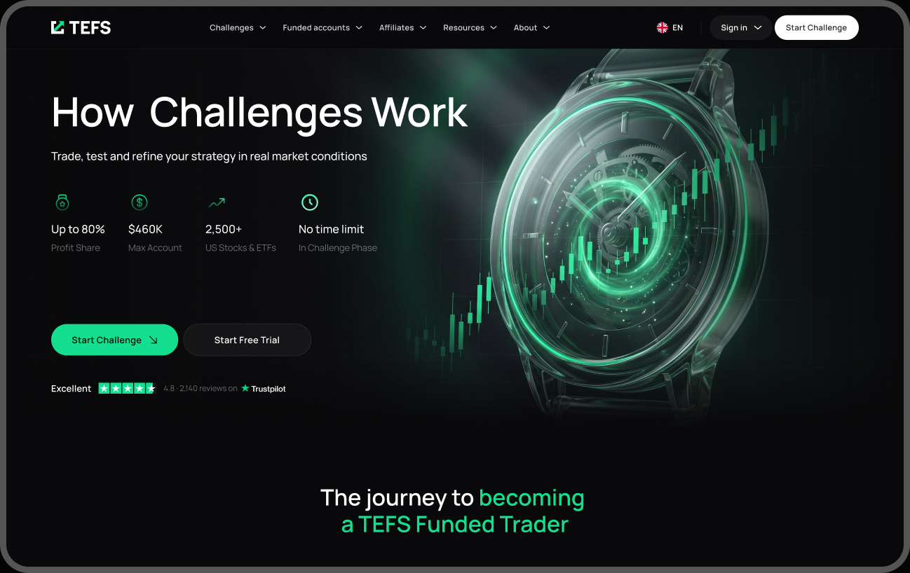
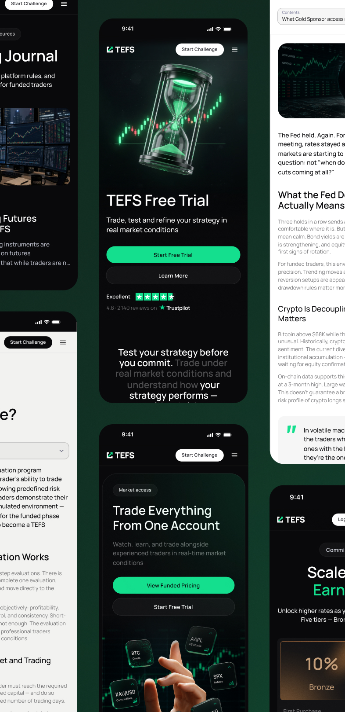
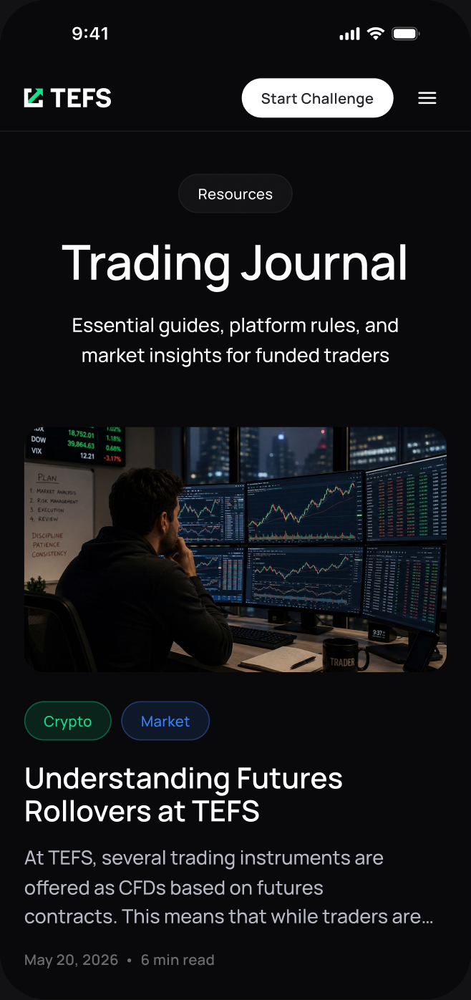
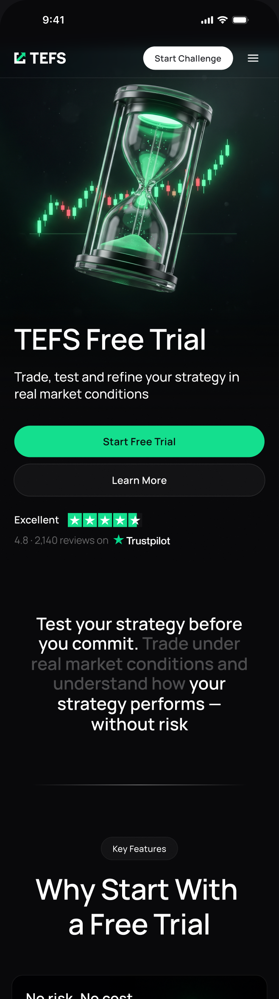
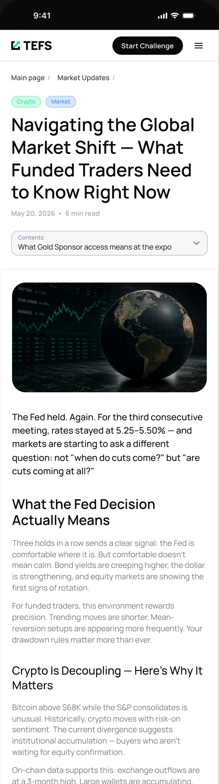
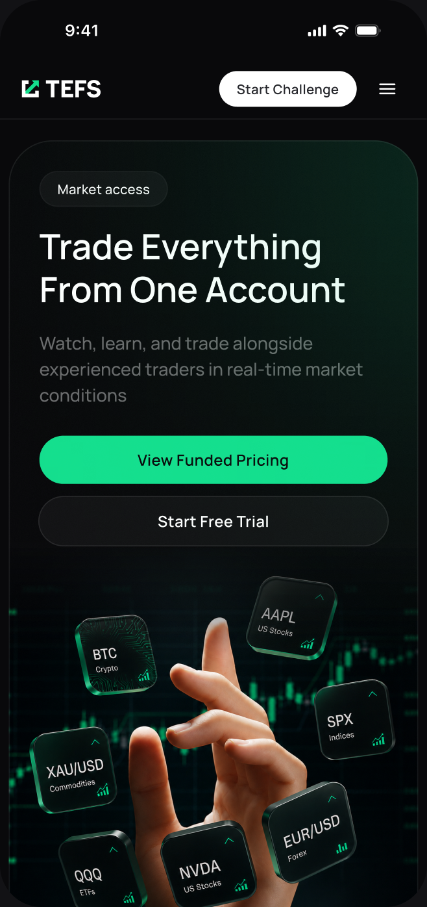
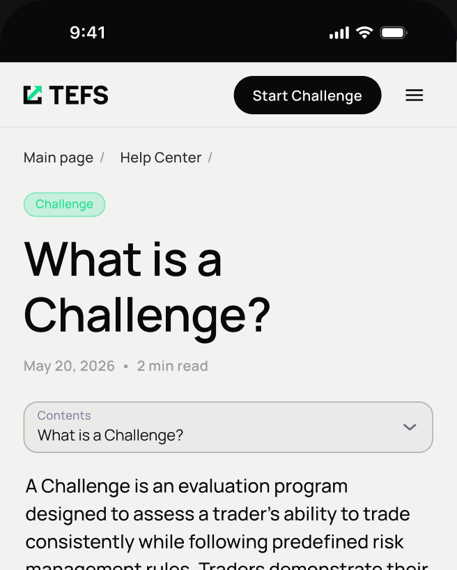
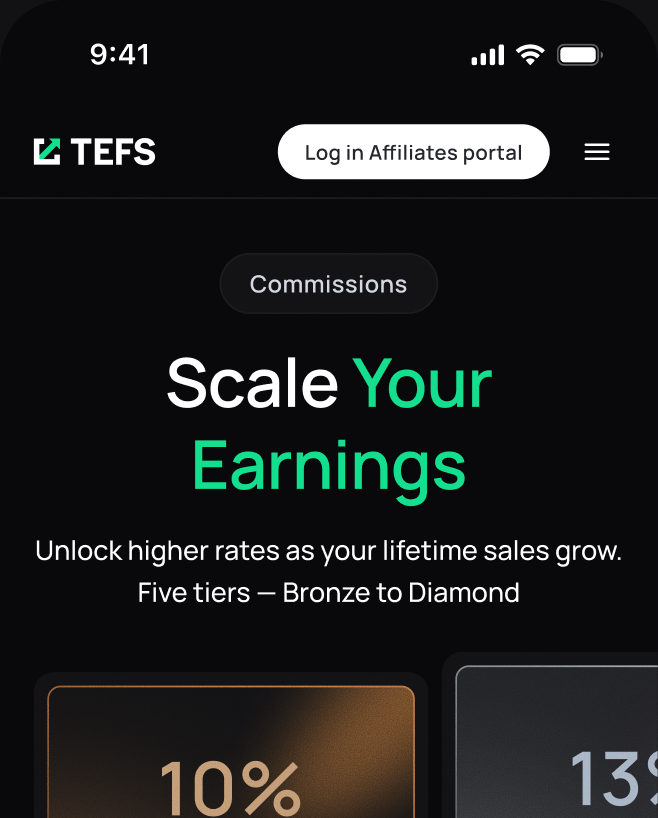
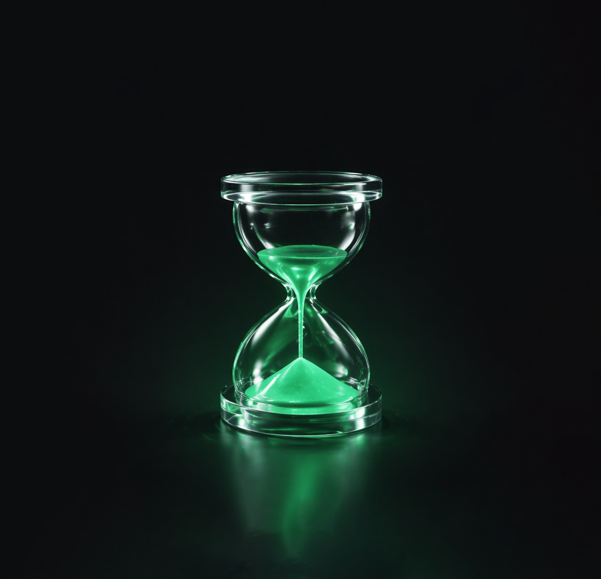

Корпоративный сайт для проп-трейдинговой компании
TEFS

О проекте
Моя роль
Веб и цифровой дизайнер
Период
С марта по октябрь 2026
Задача и ограничения
Перезапустить сайт, а затем развивать его как основной маркетинговый инструмент.
Параллельно — поддерживать промо-кампании, соцсети и сопутствующие материалы в едином визуальном стиле.
Состав команды
Я — единственный дизайнер
Маркетолог
Разработка
Что я сделал
- Спроектировал и запустил новый многостраничный сайт компании за 2 месяца
- Разработал структуру и дизайн ключевых страниц, а затем масштабировал сайт: подготовил 5+ дополнительных страниц под продуктовые сценарии, ограничения, pricing, how it works и CTA-блоки.
- Собрал дизайн-систему и визуальный подход проекта, включая AI-графику в фирменной стилистике: стекло, металл, тёмный фон и акцентный зелёный свет.
- Поддерживал маркетинговые активности после запуска сайта:
a. промо-лендинги и баннеры,
b. кампании к сезонным и торговым событиям,
c. PDF-материалы, YouTube-обложки и креативы для соцсетей,
d. промо-блоки для личного кабинета.

Что в итоге?
Результатом работы стал новый многостраничный сайт. Он заложил основу для дальнейшего развития продуктовых разделов и рекламных кампаний
Внутренние страницы
В рамках редизайна разработал внутренние страницы продуктовых разделов: механику работы, условия и ограничения, тарифы и другие важные разделы. Все страницы адаптированы под мобильные устройства и выполнены в рамках единой дизайн-системы.


Новых страниц
спроектировано
в рамках редизайна







Креативы
Помимо сайта, я отвечал за визуальное оформление рекламных кампаний TEFS: разрабатывал концепции, создавал 3D-графику и адаптировал материалы под разные форматы — от баннеров и соцсетей до презентаций и промо в личном кабинете.
- Бриф — 2 дня
- Концепция — 3 дня
- Key Visual — 4 дня
- Адаптивы — 3 дня
- Промо в кабинете — 2 дня
- Баннеры — 2 дня
- YouTube и Shorts — 2 дня
- PDF-материалы — 1 день
- Поддержка кампании — 30 дней

50+
Для рекламных кампаний


Финальная мысль